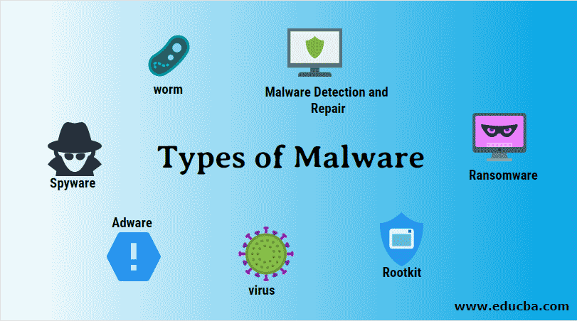
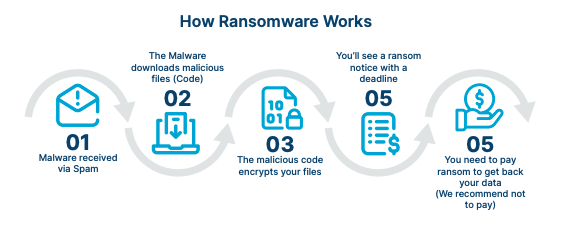
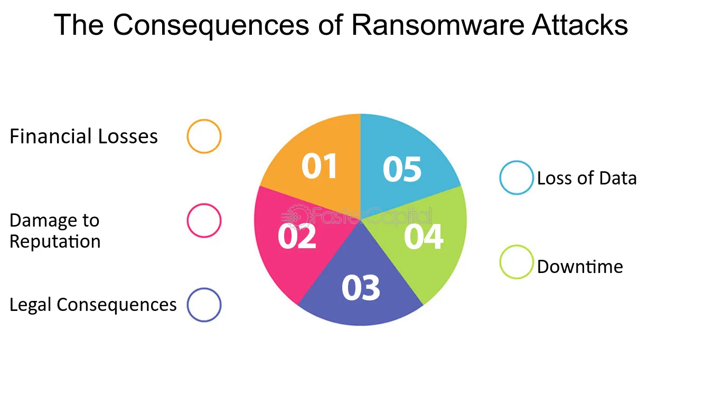
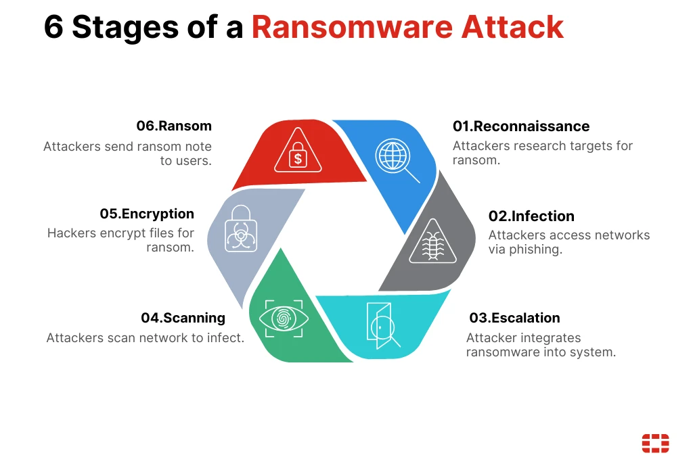
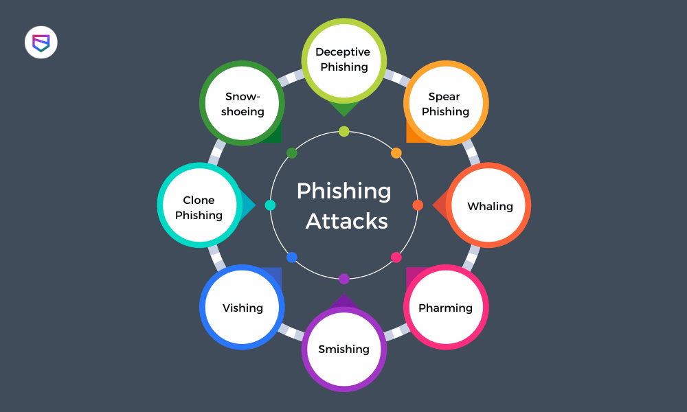

Cyber safety is the essential practice of protecting your personal information and yourself from online dangers like hacking, identity theft and cyberbullying. It means actively taking steps to secure your online life like using strong passwords, avoiding risky links and websites and monitoring your online actions. It requires being aware of the specific dangers present on platforms like social media and online games and taking precautions to reduce those risks. As technology grows, cyber safety is increasingly important, making it crucial for everyone to protect themselves from malicious online activity.
In here we need to understand the most common digital dangers like malware, ransomware, phishing attacks, spyware and social engineering tricks. Learn how attackers operate and how these threats spread.
Cyber threats are attempts by attackers to damage systems, steal information or gain unauthorized access. These threats target computers, mobile devices, networks and even online accounts. Understanding them helps advanced users identify risks early and take safe steps.

Malware is malicious software designed to disrupt, damage or gain unauthorized access to computer systems. Cybercriminals use malware to infect devices to steal data, steal bank details or personal information or Force victims to pay money.
Malware impacts individuals and businesses by causing financial losses, stealing data, disrupting operations, damaging reputations, device performance getting slower, files loss or get currepted.
Ransomware is a type of malware. It’s harmful computer software that locks up a victim's personal information. It locks you’re files (encrypting), making them and the computer systems that use them impossible to open. To unlock the data, attackers demand money (a ransom). This payment is usually requested using digital money because it’s hard to trace, like Bitcoin or other cryptocurrencies, in return for a special code (a decryption key) that restores access to the victim's files again.


Ransomware causes harm to both people and organizations. It leads to losing money, stopping work and losing or data stolen. The negative results include paying the ransom, high costs to fix the system, legal trouble and badly damaging a company's reputation. For individuals, it can cause financial problems and stress. For vital areas like hospitals, ransomware can even stop or delay critical life saving care.
Ransomware attacks happen in six main steps. First, hackers search for weak targets. Next, they infect the system, often through a bad link or email. Then take deeper control of the network and spread the malware to as many places as possible. After that, they lock all your critical files. Finally, they send a ransom note demanding payment to unlock your data.

Ransomware criminals target smaller and medium sized businesses because these companies usually have weaker security and fewer IT experts to stop attacks. They also focus on companies that urgently need their files back like those using important databases.
Anyone with valuable private information can be a victim. Hackers may demand high fees to keep the data secret. The malware doesn't always come directly. It can also spread through normal looking online ads. While computers are common targets, phones and tablets can also be infected. To stay safe,
businesses need strong tools to find and stop these threats on all devices as soon as they appear.

Phishing attacks means, criminals pose as trusted organizations to trick you into revealing sensitive personal data. They typically send emails, text or create fake websites designed to look like a legitimate source, such as a bank or a major online service. The attacker’s goal is to lure you into giving them your secret login details like usernames, passwords and credit card numbers, which they can then use to steal money, commit identity theft or sell your information to other malicious parties.
1.Email phishing → fake emails with harmful links.
A phishing email is a fake message sent by criminals that pretends to come from a real company or person you trust. The email tries to trick you by using urgent words or exciting offers to get you to click a dangerous link or open a harmful file. By doing this, they want to steal your passwords, credit card numbers, other private information or secretly install viruses on your computer.
2.SMS phishing (Smishing)
SMS Phishing (Smishing) is simply phishing done through text messages. Criminals send fake texts that look like they are from a trusted source like your bank or delivery service. These texts try to trick you by creating a sense of panic or offering a great deal, hoping you will quickly click a malicious link, call a fake number or download something harmful. Their goal is always to steal your private information like your passwords and bank details.
3.Voice phishing (Vishing) → attackers calling to ask for OTPs or bank details.
Voice phishing (Vishing ) is a scam where criminals use phone calls to trick you into giving up private details like passwords or bank information. The attackers pretend to be someone important you would trust like your bank or the government. They try to make you feel scared or worried by using tricks that create a fake emergency like your bank account will be shut down unless you follow their instructions right away forcing you to act quickly without thinking. Their goal is to stop you from pausing to realize it's a scam. They might even use fake caller ID or robocalls to seem more convincing, but their only goal is to steal your personal and financial data.
4.Spear phishing → highly targeted attacks against individuals.
Spear phishing is a very focused type of attack where the criminal goes after a specific person or small group instead of sending out mass emails. The messages are highly customized and often include details the attacker has researched, like the target's name, job title or information about a recent project. This personal touch makes the email look much more believable and increases the chances that the victim will fall for the trick.